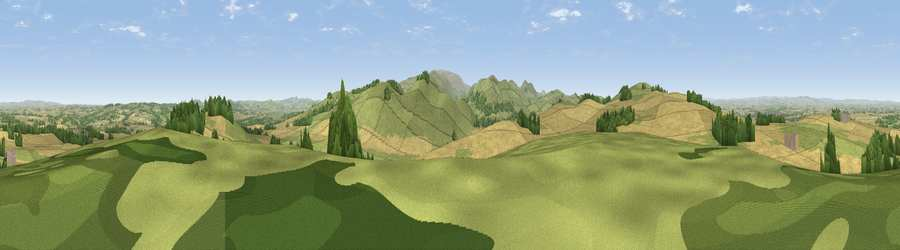

Viewpoint near Branxton
#9676 in England · top 39% of its area beats it · near BranxtonThe view, rendered

A 360° render of this exact spot computed from the terrain model, tree cover and land cover — summer colours, afternoon light, calibrated against photographs of famous viewpoints. Real trees, hedges and buildings will differ in detail.
The panorama
Grey silhouette: terrain skyline in each direction (720 bearings, Earth curvature and refraction included). Dashed green: skyline with trees (+15 m) and buildings (+8 m) as obstacles. Blue strip: how far the ground is visible on each bearing.
Where the view opens
Wedge length = distance to the farthest visible ground on that bearing (vegetation-aware). Rings at 10, 25 and 50 km.
What fills the view
46% grassland · 45% cropland · 9% woodland
Angular shares of the visible panorama (visual magnitude), not map area. Landscape diversity 0.42 (0–1 Shannon).
Key numbers
More beautiful places nearby
The staircase of upgrades: each row has a higher view potential than everything closer. Driving times are estimates from straight-line distance, calibrated against real road routing — check an actual route before setting out.
| Place | Direction | Drive | Score |
|---|---|---|---|
| Viewpoint near Branxton | E · 1 km | ~3 min | 68.2 |
| Viewpoint near Branxton | W · 2 km | ~5 min | 73.6 |
| Kypie Hill | SSE · 2 km | ~5 min | 80.3 |
| Housedon Hill | S · 2 km | ~6 min | 80.5 |
| Moneylaws Hill | WSW · 3 km | ~7 min | 83.0 |
| Viewpoint near Kirknewton | SSE · 7 km | ~14 min | 86.1 |
| Greensheen Hill | E · 16 km | ~28 min | 87.5 |
| Viewpoint near Chillingham | ESE · 21 km | ~35 min | 88.1 |
55.61119, -2.16308 · source: screening · position refined by local search. Computed location — check access rights before visiting.